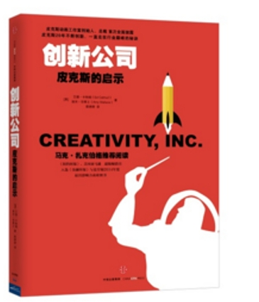

看不见的完美硬币：细节的负担
创新公司皮克斯的启示

细节从来都是个好东西，完美的细节往往给我们赢得商业上的胜利，
但是，在皮克斯，这一家满是完美主义设计师的企业里，细节竟然成了负担，
怎么打造完美的细节?又怎么赢得商业上的利益。皮克斯总裁艾德·卡特姆为我们解答
看不见的完美硬币：细节的负担
在皮克斯，每一部电影都是商业与艺术的双赢,不管这些电影是艺术作品，还是商品，细节都是至关重要的,是决定成败的关键。人们似乎也听
过许多关于细节的胜利的故事，但是在皮克斯，设计师们一个个都是完美主义者，细节显然成了皮克斯的负担。这样的太过于重视细节，往往会
伤害到企业该有的效率，最终伤害企业的根本。:在完美细节和企业应有的效率面前，艾德·卡特姆做出了明智的决策。
皮克斯有一个现象，被我们的制片人叫作“看不见的完美硬币(the perfect coin)”,这个词指代的是皮克斯制作人员对细节的精益求精。有时
候，被我们的制片人凯瑟琳·萨拉菲安称为“床头柜上一枚没人会注意到的硬币”这样的细节,也会引得我们的工作人员花上几天甚至数周的时间
悉心打磨。凯繇琳是《怪兽电力公司》一片的制作人员,影片中有一幕戏可以形象地向我们阐释到底什么是“看不见的完美硬币”在这幕戏